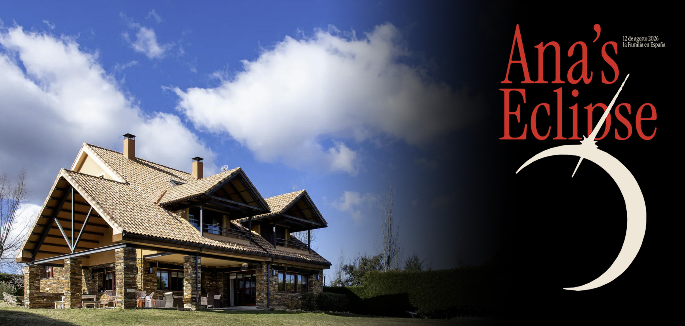

Day 1 · Sunday, August 9
Arrival in Madrid
Two family arrivals, rental-van pickup and a deliberately gentle first afternoon for settling in, groceries and an easy neighborhood dinner.
Open Day 1
A day-by-day guide to the family journey across Spain
Choose a day below. Each travel day now has its own page, making the guide easier to navigate, share and expand as the itinerary develops.
Two family arrivals, rental-van pickup and a deliberately gentle first afternoon for settling in, groceries and an easy neighborhood dinner.
Open Day 1Roman engineering, medieval villages, limestone canyons and arrival in the mountain town of Riaza.
Open Day 2A slow morning at La Casa Campo, followed by a 2:15 PM birthday celebration for Christian at Caballos La Vereda—and a reminder that the eclipse is tomorrow.
Open Day 3The big day: Ana's Birthday! Oh, and there's an eclipse. Expect a delightfully chaotic day as we run around like headless chickens before heading out to find a clear western horizon for the evening's celestial show. Eclipse begins at 7:35 PM, reaches maximum at 8:30 PM (1m 35s of totality), ends at 9:23 PM, with sunset at 9:18 PM.
Open Day 4Something will happen today... wonder what? After last night's unforgettable eclipse, the agenda is refreshingly simple: sleep in a little, relive the photos over breakfast, and enjoy Riaza at its own unhurried pace. Thursday is market day, cafés spill into the plaza, and the Sierra air is perfect for a leisurely wander. If there is a celebration today, it's for shared memories rather than celestial events.
A waterfall-village lunch, the Altamira Neocave and an evening arrival on the Cantabrian coast.
Open Day 6A flexible day choosing among Santander’s best beaches, followed by Norita’s special 8:30 PM birthday dinner at El Serbal.
Open Day 7Day 7 is now included. Future days will continue to be added here as separate pages without making any one page unwieldy.